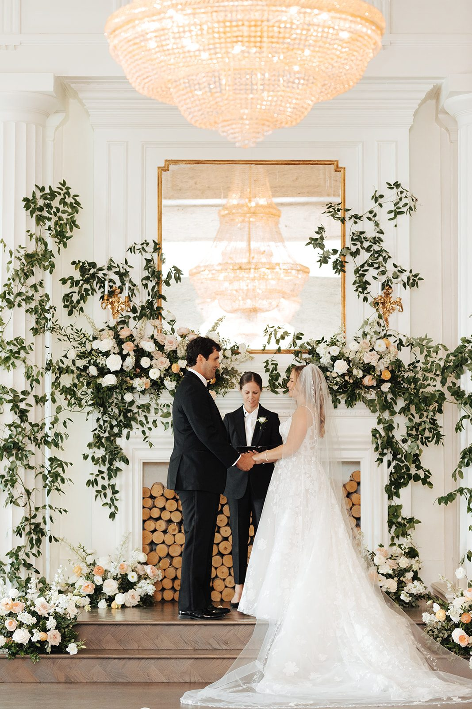
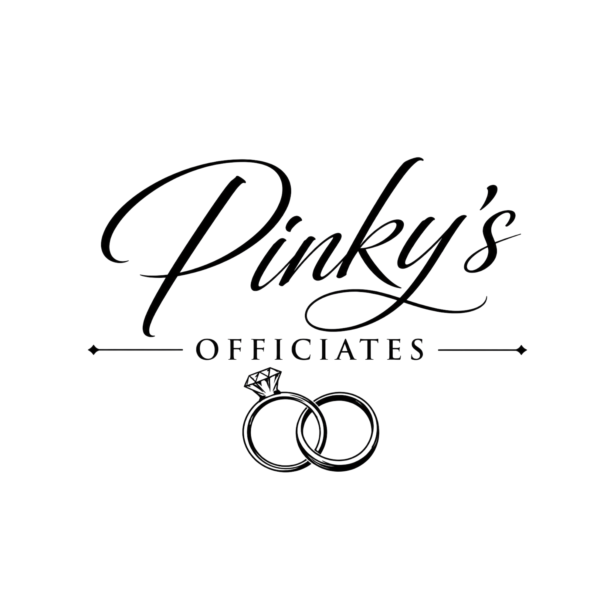
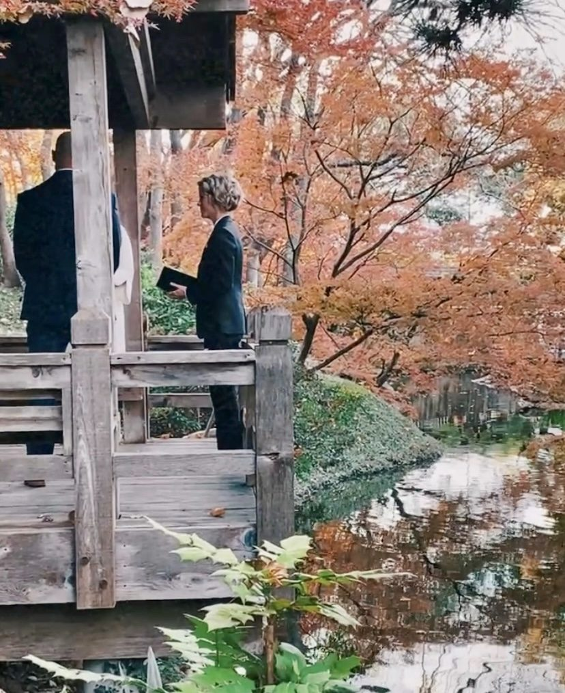

01
Wedding Ceremonies
A heartfelt ceremony built around your relationship, values, personality, and vision for the day.

Dallas–Fort Worth Wedding Officiant
Personalized ceremonies that feel genuine, joyful, inclusive, and unmistakably yours.
Ceremonies with heart. Stories with soul.
Meet Chelsie

If you're looking for someone who will laugh with you, cry with you, calm your nerves before you walk down the aisle, and tell your love story in a way that feels genuine—you've found your person.
With more than 20 years in the event industry, I know that the most meaningful moments aren't always the perfectly planned ones. They're the unexpected glances, shaky vows, happy tears, laughter, and the feeling that everyone in the room is witnessing something truly special.
My journey as an officiant began in 2019, when two close friends asked me to marry them during an intimate elopement in Kauai, Hawaii. Standing beneath a waterfall, surrounded by nature and the people they loved, I felt something I couldn't quite explain. I simply knew I was exactly where I was meant to be.
I thought it would be my first and last ceremony.
Instead, it became the beginning of something I never saw coming.
Since then, one ceremony has led to another through referrals, friends, and couples who connected with the way I tell a love story. And every ceremony reminds me why I said yes that first time.
I don't believe your wedding should sound like it came from a template. It should sound like you.
Whether your ceremony is elegant, adventurous, spiritual, lighthearted, traditional, unconventional, or somewhere beautifully in between, I'll create something that reflects your relationship and the people who brought you to this moment.
My own beliefs are rooted in love, energy, connection, and a higher power. I don't subscribe to one religion, and that allows me to create ceremonies that are welcoming and meaningful for couples of every background, belief, and identity.
At Pinky's Officiates, everyone is welcome.
Love is love.
I have a favorite belief that has always stayed with me: that when we enter this world, a small piece of our soul is tucked away in a secret garden. Throughout our lives, we meet people who help us discover and become more fully ourselves. When we find our person, they don't complete us—they remind us of something within ourselves that was there all along.
That's the story I hope every ceremony tells.
Because your wedding isn't simply about saying, "I do." It's about honoring everything that brought you here—and celebrating the adventure that begins when you walk back down the aisle together.
I'd be honored to help tell your story.
Ceremonies with Heart. Stories with Soul.
Your story. Your people. One unforgettable moment.
“When we find our person, it isn't because they complete us—it's because they remind us of a part of ourselves we've always carried within.”
Ways to say forever

A heartfelt ceremony built around your relationship, values, personality, and vision for the day.

Intimate, meaningful, and beautifully simple‚Äîwithout ev∂ªßq´^u˙+n∑Øä‹¢ûÿb≤⁄⁄û«+äõ